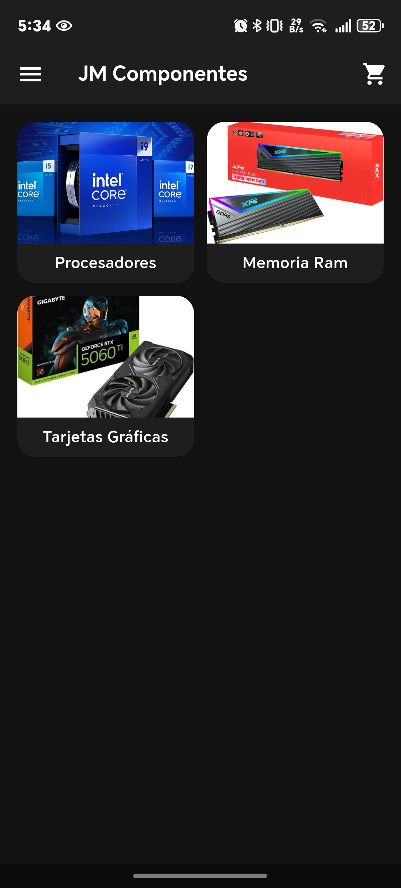
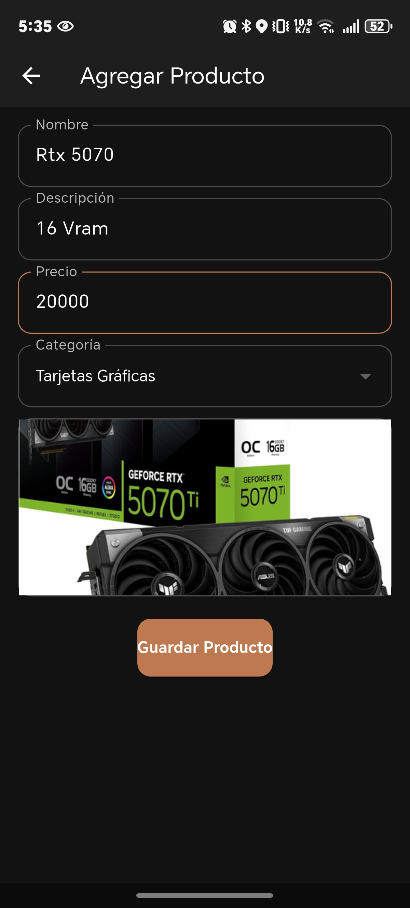
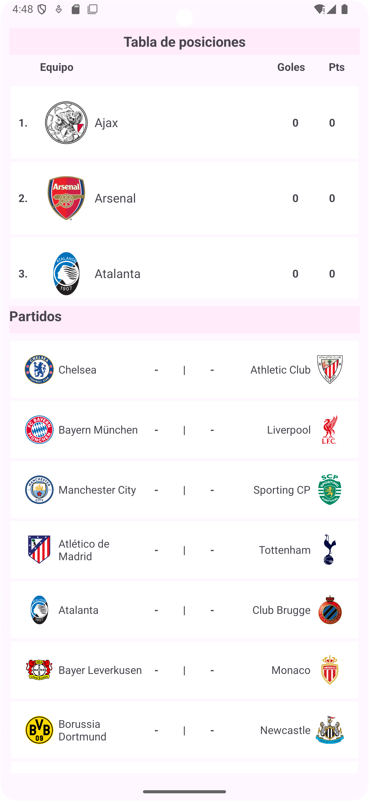
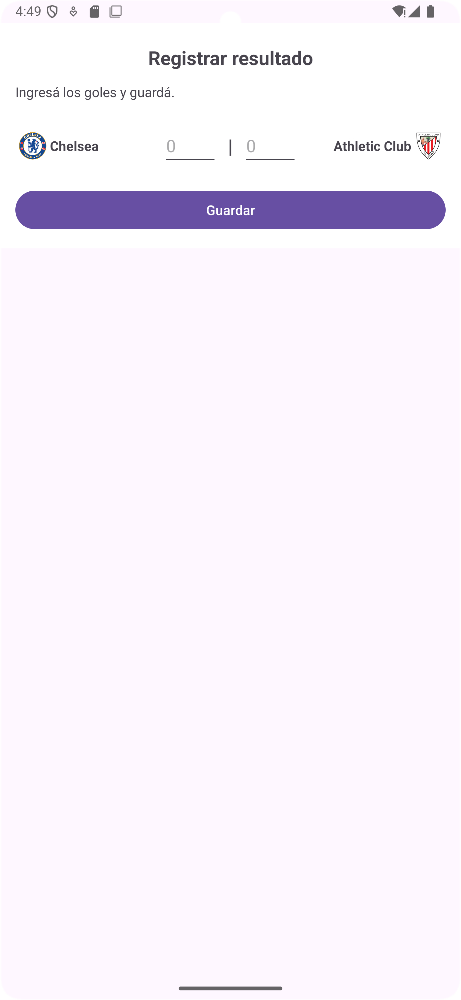

Jose Luis Moncada Peralta
Pregrado: Ingeniero en Ciencias de la Computación
Educación Básica: BTP en Informática
Edad: 21 años
Ubicación: La Ceiba, Honduras
Desarrollador Full-Stack entusiasta, enfocado en Laravel, Vue.js e Inertia.js.
Apasionado por la administración de sistemas Linux y el desarrollo de aplicaciones móviles.
Especializado en crear soluciones escalables, transformando requerimientos técnicos en interfaces
intuitivas.
Defensor de las buenas prácticas de ingeniería, el código limpio y el aprendizaje constante para
optimizar
la experiencia de usuario y el rendimiento de los sistemas.




Correo: josemoncadaperalta05@gmail.com | GitHub | Teléfono: +504 9926-4599